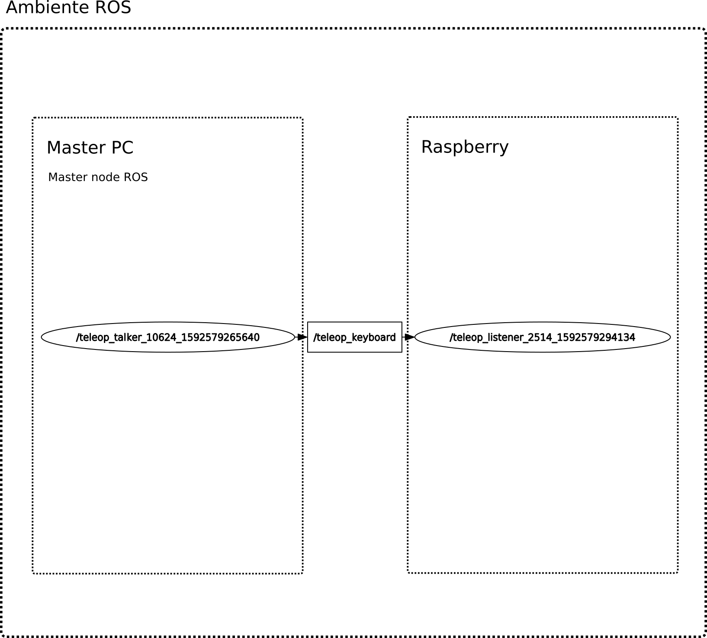

Un problema di grande importanza nell'ambito della robotica mobile è quello di creare dei veicoli in grado di sapersi localizzare nello spazio circostante - sia esso conosciuto o meno - e di saper eventualmente creare una mappa di questo ambiente.
La realizzazione del presente elaborato progettuale consta di due parti:
la realizzazione fisica del robot mobile;
l'implementazione di un sistema software in grado di gestire le operazioni di movimento, localizzazione e mappatura.
Motivazioni
La realizzazione di un robot mobile in grado di sapersi localizzare nell'ambiente circostante e creare una mappa di esso può risultare molto utile in diversi ambiti, dall'industria (e.g, robot collaborativi in grado di muoversi autonomamente lungo le linee di montaggio) fino ad arrivare a contesti più piccoli come quello domestico (e.g., robot aspirapolvere Roomba).
Obiettivi
Gli obiettivi del presente elaborato progettuale sono stati i seguenti:
assemblare un robot fisico a tre ruote;
implementare un sistema di guida teleoperata attraverso l'utilizzo della tastiera del computer;
acquisire le immagini dell'ambiente circostante attraverso il sensore RGBD del Microsoft XBOX Kinect v1;
eseguire le operazioni di localizzazione e mappatura attraverso il processo SLAM.
Assemblaggio del robot mobile
Il processo di assemblaggio del robot mobile è stato ispirato dal lavoro svolto da Luca Iocchi, dell'Università La Sapienza di Roma, nell'ambito della realizzazione di un robot mobile economico e facile da costruire e programmare.
In linea con quanto proposto dal creatore di MARRtino - così si chiama il robot precedentemente citato - si sono utilizzate le seguenti componenti:
Unità di elaborazione: Raspberry Pi 4 Model B con 2 GB di memoria RAM;
Microcontrollore: Arduino Uno;
Scheda motore L298N, ponte H a doppio canale;
Sensore di visione: Microsoft XBOX Kinect v1;
Kit ruota: 25GA370, 2 motori DC 6V con alberi motore, ingranaggi e ruote;
Alimentazione unità di elaborazione: powerbank Tqka 10000mAh, output 5V-2.1A;
Alimentazione sensore di visione e servomotori: batteria al piombo 12V-7.2Ah.
Nella seguente immagine è illustrato lo schema circuitale seguito nell'assemblaggio delle varie parti.
Guida teleoperata
La realizzazione delle operazioni di guida teleoperata ha visto l'implementazione di due script Python e una ruotine in codice C/C++ per l'Arduino.
L'architettura di esecuzione si basa sul principio client-server, dove c'è una macchina in ascolto e una macchina che invia richieste di esecuzione. Il robot mobile con su montato il Raspberry in questo caso è considerato il server perché attua fisicamente le richieste di movimento; il client è il computer remoto attraverso il quale l'utente attua le richieste. Nel seguito è illustrata l'architettura di riferimento.

Arduino
arduino_cmd.ino
In questa ruotine è implementata la logica di basso livello della navigazione. Nel dettaglio:
si è effettuata la configurazione dei pin di input e degli encoder di velocità seguendo il circuito presentato nella sezione precedente;
si sono definite le primitive di movimento forward(), backward(), left(), right() e stop();
si sono definite le primitive di incremento delle velocità lineare e angolare increaseVel() e increaseVel();
Python - Lato client
teleop_talker.py
Attraverso questo script si crea il nodo ROS /teleop_talker, si catturano gli input inseriti da tastiera dell'utente e si publicano come messaggi sul topic /teleop_keyboard. Nel dettaglio, per la navigazione da tastiera vengono utilizzati i seguenti comandi:
w: movimento in avanti;
a: movimento a sinistra;
s: movimento indietro;
d: movimento a destra;
q: decremento velocità;
e: incremento velocità;
Per la creazione dello script è stato utilizzato il modulo Python pynput, utile a gestire gli input dell'utente.
Python - Lato server
teleop_listener.py
Attraverso questo script si crea il nodo ROS /teleop_listener, sottoscrittore del topic /teleop_keyboard, e si rimane in ascolto di eventuali messaggi. Ogni nuovo messaggio viene successivamente inoltrato all'Arduino attraverso messaggi inviati alla porta seriale.
Per la creazione di questo script è stato utilizzato il modulo Python pyserial, utile per gestire la comunicazione tra il Raspberry e l'Arduino.
Acquisizione immagini dal Kinect
Per gestire l'acquisizione delle immagini dal Kinect al Raspberry si è utilizzata la libreria multipiattaforma libfreenect.
E' possibile visualizzare le immagini RGB e di profondità sul Raspberry, attraverso il comando freenect-glview, oppure utilizzando la logica client-server accennata nella sezione precedente utilizzando gli script Python di utilità kinect_listener.py e kinect_visualizer.py. Nel seguito sono rappresentate, rispettivamente, la visualizzazione delle immagini RGB e di profondità attraverso freenect-glview e attraverso l'accoppiata kinect_listener.py-kinect_visualizer.py.
L'architettura client-server sopra accennata è rappresentata nell'immagine sottostante.
Negli script kinect_listener.py e kinect_visualizer.py sono stati utilizzati i moduli opencv-python, per la gestione della visualizzazione delle immagini, e cv_bridge per convertire/deconvertire l'immagine ROS in immagine OpenCV.
Caveat
Purtroppo l'acquisizione delle immagini RGB e di profondità non è stata immediata a causa di limitazioni hardware imposte dal Raspberry. Infatti, l'utilizzo della libreria libfreenect non è da sola bastato a permettere il corretto invio delle immagini dal sensore di visione all'unità di elaborazione. Dopo numerose ricerche, si è scoperto sperimentalmente che un modo per correggere il problema è quello di saturare il flusso dei dati USB inserendo in tutte le porte dei dispositivi. Fatto ciò, il problema scompare e non si ha più perdita di informazione.
RGB-D SLAM
Per attuare le operazioni di RGB-D SLAM è stata utilizzata la libreria RTAB-Map (Real-Time Appearance-Based Mapping), la quale può essere utilizzata per generare una nuvola di punti dell'ambiente circostante e creare una mappa per la navigazione.
RTAB-Map si basa sulla generazione di un grafo e l'utilizzo di un rilevatore di chiusura Bayesiano per determinare quanto verosimilmente un'immagine provenga da un luogo già visitato oppures no. Quando un'ipotesi di chiusura è verosimile, un nuovo vincolo viene aggiunto al grafo e la mappa dell'ambiente circostante ottimizzata di conseguenza. Per limitare il carico di lavoro necessario all'individuazione delle chiusure e alla successiva ottimizzazione, viene utilizzato un approccio avanzato di gestione della memoria. Questo permette a RTAB-Map, anche se utilizzato in ambienti di dimensioni elevate, di gestire in tempo reale le operazioni di mappatura e localizzazione.
Nel seguito è presentata un'immagine di RTAB-Map in azione.
Implementazione e Codice
Implementazione
Le tecnologie utilizzate al fine di implementare quanto nelle sezioni precedenti descritto sono state:
Python 3
pynput
pyserial
Python 2
opencv-python
cv_bridge
ROS Melodic (Lato Client) e ROS Noetic (Lato Server)
Acquisizione e visualizzazione immagini RGB e di profondità
RGB-D SLAM
Risultati quantitativi
Per valutare oggettivamente le performance di esecuzione delle operazioni di SLAM sono state messe in opera le seguenti metriche:
RMSE ATE, errore quadratico medio calcolato tra tutti i punti della traiettoria stimata e della traiettoria ideale di riferimento (ground truth);
RMSE RPE, errore quadratico medio calcolato tra tutte le coppie di punti della traiettoria stimata e della traiettoria ideale di riferimento (ground truth).
Tali metriche sono state ricavate utilizzando due script di utilità - evaluate_rpe.py ed evaluate_ate.py, presenti nella cartella benchmark su GitHub - reperiti al seguente
link. Entrambi gli script utilizzano come input due file contenenti, per ciascuna riga, i seguenti attributi:
timestamp, il tempo di esecuzione espresso in formato Unix;
la tripletta tx, ty e tz, ovvero la posizione del centro ottico della camera RGB - nel rispetto della terna di origine;
la quadripletta qx, qy, qz e qw, ovvero l'orientamento del centro ottico della camera RGB espresso in forma di quaterione unitario - nel rispetto della terna di origine.
I due file precedentemente citati contengono, rispettivamente, le pose assunte dal centro ottico della camera RGB nella realizzazione della traiettoria stimata e le pose assunte dal centro ottico della camera RGB nell'esecuzione della traiettoria ideale (ground truth).
Tali file sono stati ottenuti agilmente a partire da RTAB-Map, che ha un'apposita impostazione di esportazione della traiettoria nel formato sopra descritto (alla voce File → Export Poses... → RGBD-SLAM format).
I percorsi scelti per la valutazione delle performance sono due e consistono in una navigazione in linea retta di 4 metri e in una navigazione in un circuito rettangolare di perimetro 6 metri.
Percorso in linea retta di 4 metri
Nel seguito è illustrato un confronto puramente visivo della traiettoria stimata e della traiettoria ideale. A valle di questa immagine è possibile trovare le tabelle con le metriche RPE e ATE.
ATE [m]
RMSE
0.149196
Media
0.124507
Mediana
0.104171
Deviazione Std.
0.082204
Valore Min
0.023175
Valore Max
0.307303
RPE (posizionale) [m]
RPE (rotazionale) [deg]
RMSE
0.286575
7.545224
Media
0.236531
6.129522
Mediana
0.210891
5.443736
Deviazione Std.
0.161797
4.399927
Valore Min
0
0
Valore Max
1.079218
22.370830
Percorso lungo circuito rettangolare di perimetro 6 metri
Come prima, viene illustrato un confronto puramente visivo della traiettoria stimata e della traiettoria ideale. A valle di questa immagine è possibile trovare le tabelle con le metriche RPE e ATE.